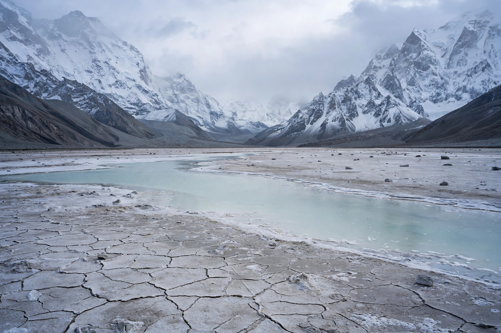

Aksai Chin
Aksai Chin (Chinese: 阿克赛钦; pinyin: Ākèsàiqīn; Hindi: अक्साई चिन) is a high-altitude desert region in the Himalayas administered by China (as part of Hotan Prefecture in Xinjiang and Ngari Prefecture in Tibet) but claimed by India as part of the union territory of Ladakh. Covering roughly 38,000 square kilometres, it is one of the two major disputed border regions between China and India, along with Arunachal Pradesh (South Tibet).

| Aksai Chin | |
|---|---|
| Area | c. 38,000 km² |
| Elevation | 4,300–6,900 m |
| Administered by | China |
| Claimed by | India |
| Status | Disputed territory |
Geography
Aksai Chin lies at an average elevation above 4,300 metres between the Kunlun and Karakoram ranges. It is a desolate salt-encrusted plain with numerous soda lakes, virtually uninhabited and with almost no vegetation. The Karakash River flows across its northern part.
History
The boundary was never formally delimited in the 19th century; British proposals such as the Johnson Line (1865) placed the region within Kashmir, while the Macartney–MacDonald Line (1899) placed it mostly in China. In the 1950s China built the Xinjiang–Tibet Highway (G219) through the territory, linking Xinjiang with Tibet — a construction India discovered only after completion. The dispute contributed to the Sino-Indian War of 1962, after which China retained control. The region remains governed by China and claimed by India, divided in practice by the Line of Actual Control.
See also
Categories: Disputed territories of Asia · Ladakh · China–India relations